Diseño, implementación, auditoría y aplicación web sobre Oracle
Base de datos LM_RESERVASALAS
En una universidad, los espacios físicos (aulas, salas de estudio, laboratorios, cabinas individuales, auditorios y salas de juntas) son un recurso limitado que comparten estudiantes, profesores y personal administrativo. Cuando las reservas se gestionan por correo, en hojas de cálculo o directamente en cada dependencia, aparecen problemas conocidos: dos personas reservan la misma sala a la misma hora, se reserva un espacio más pequeño de lo necesario o fuera del horario del edificio, y no queda un registro confiable de quién hizo cada cambio ni cuándo.
Para el trabajo final del curso se eligió, de la lista «Proyectos de clases 2026-1», el proyecto 8: Sistema de Reserva de Salas Universitario. Se trata de una aplicación institucional para que la comunidad universitaria reserve espacios físicos de forma rápida y controlada.
Diseñar e implementar en Oracle una base de datos para la reserva de espacios universitarios que garantice la integridad de los datos y registre automáticamente todos sus cambios. Sobre ella se construye una aplicación web que permite administrar la información y consultar ese historial.
El sistema administra facultades, usuarios, edificios, tipos de espacio, espacios, recursos y reservas. Además de las restricciones declarativas (llaves primarias y foráneas, UNIQUE y CHECK), aplica en la propia base de datos las reglas del negocio:
Quedan fuera del alcance el inicio de sesión con contraseña, el envío de notificaciones y la publicación del sistema en un servidor. La aplicación pide a la persona su nombre de usuario solo para registrarlo en la auditoría; no lo usa para restringir permisos.
Todo el proyecto se desarrolló y probó en un computador con Windows 11 Pro y 15 GB de memoria RAM. La base de datos, la
aplicación web y las pruebas se ejecutan en el mismo equipo (localhost), sin servicios externos.
| Herramienta | Versión | Uso en el proyecto |
|---|---|---|
| Oracle AI Database 26ai Free | 23.26.4 | Motor de base de datos. Es la edición gratuita de Oracle: admite hasta
2 CPU, 2 GB de memoria y 12 GB de datos, suficiente para el proyecto. Se instaló en D:\Oracle. |
| PL/SQL | Incluido en Oracle | Paquete de auditoría, triggers de auditoría y de reglas del negocio, y bloque anónimo de consulta. |
| SQL*Plus | 23.26.4 | Ejecución de los scripts de creación, carga de datos, auditoría, respaldos y pruebas. |
Oracle Data Pump (expdp) | 23.26.4 | Respaldo binario complementario de la estructura y de los datos. |
| Node.js | 26.12.1 | Entorno de ejecución del servidor de la aplicación web. |
| Express | 4.22.3 | Servidor web y API REST de la aplicación. |
| node-oracledb | 6.10.0 | Controlador oficial de Oracle para Node.js, en modo Thin: se conecta directamente a la base de datos sin instalar Oracle Client. |
| HTML, CSS y JavaScript | Estándar | Interfaz web, sin frameworks. Tipografía Host Grotesk, de Google Fonts. |
| draw.io (diagrams.net) | Formato .drawio | Diagrama relacional editable; también se entrega como imagen PNG. |
| Python y openpyxl | 3.14.7 y 3.1.5 | Script que lee el diccionario de Oracle y genera el diagrama y el diccionario de datos en Excel. |
| Microsoft Edge | 158 | Generación de los PDF (documento y diccionario) y navegador en el que corren las pruebas automáticas. |
| Playwright y axe-core | 1.65.1 y 4.14 | Pruebas automáticas de extremo a extremo y análisis de accesibilidad. |
| Git y GitHub | 2.55 | Control de versiones y entrega de los archivos en el repositorio del proyecto. |
| Parámetro | Valor |
|---|---|
| Base de datos conectable (PDB) | FREEPDB1 |
| Cadena de conexión | localhost:1521/FREEPDB1 |
| Juego de caracteres | AL32UTF8 (Unicode), para guardar tildes y eñes sin problemas |
| Esquema del proyecto | LM_RESERVASALAS |
| Tablespace | LM_RESERVASALAS_TS: 100 MB iniciales que crecen de 20 en 20 MB hasta 1 GB |
| Privilegios del esquema | Iniciar sesión y crear tablas, vistas, secuencias, procedimientos, triggers, sinónimos y tipos. Para los respaldos con Data Pump, además, lectura y escritura en su directorio y el rol DATAPUMP_EXP_FULL_DATABASE. |
El nombre lleva como prefijo LM, las iniciales de los apellidos de los integrantes: Lara y Malagón.
En Oracle, la base de datos de una aplicación se implementa como un esquema (un usuario dueño de sus tablas)
dentro de una base de datos conectable. Por eso el nombre con el prefijo se aplica al esquema LM_RESERVASALAS y a su tablespace.
| Carpeta | Contenido |
|---|---|
01_diseno/ | Diagrama relacional (.drawio y .png) y diccionario de datos (.xlsx y .pdf) |
02_scripts/ | Scripts SQL y PL/SQL numerados del 00 al 06, y los archivos instalar_bd.bat y backup.bat |
03_backups/ | Respaldos generados: estructura sin datos y datos, en SQL y en Data Pump |
04_app/ | Aplicación web y sus pruebas automáticas (tests/e2e/) |
05_pruebas/ | Script de pruebas en SQL, sus resultados y las capturas de pantalla |
06_documento/ | Este documento, en HTML y en PDF |
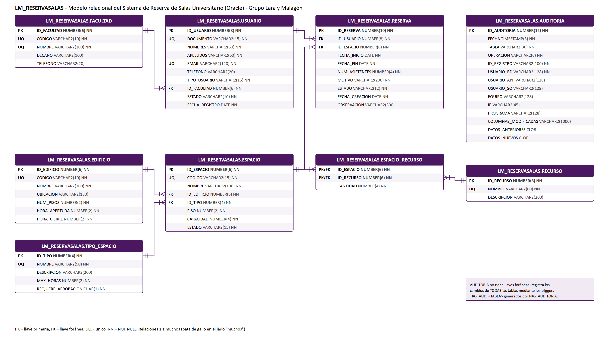
01_diseno/diagrama_relacional.drawio; imagen: diagrama_relacional.png).| Tabla | Propósito | Relaciones |
|---|---|---|
| FACULTAD | Facultades y dependencias de la universidad. | 1:N con USUARIO |
| USUARIO | Estudiantes, profesores, personal y administradores. | N:1 con FACULTAD; 1:N con RESERVA |
| EDIFICIO | Bloques del campus con su horario de apertura y cierre. | 1:N con ESPACIO |
| TIPO_ESPACIO | Aula, sala de estudio, laboratorio, cabina…, con máximo de horas por reserva. | 1:N con ESPACIO |
| ESPACIO | Espacio físico reservable, con capacidad y estado. | N:1 con EDIFICIO y con TIPO_ESPACIO; 1:N con RESERVA; N:M con RECURSO |
| RECURSO | Catálogo de equipos (videobeam, computadores, sonido…). | N:M con ESPACIO |
| ESPACIO_RECURSO | Tabla intermedia N:M con la cantidad de cada recurso por espacio (PK compuesta). | N:1 con ESPACIO (borrado en cascada) y con RECURSO |
| RESERVA | Reserva de un espacio por un usuario en una franja horaria del mismo día. | N:1 con USUARIO y con ESPACIO |
| AUDITORIA | Historial de todos los cambios de las tablas anteriores. | Sin FK (registra cualquier tabla) |
El modelo está en tercera forma normal: cada atributo depende solo de la llave de su tabla (por ejemplo, el horario
pertenece al edificio y el máximo de horas al tipo de espacio, no a cada espacio), y la relación muchos a muchos entre
espacios y recursos se resuelve con la tabla intermedia ESPACIO_RECURSO.
| Tipo | Ejemplos |
|---|---|
| PRIMARY KEY | Una por tabla; columnas IDENTITY autoincrementales; PK compuesta en ESPACIO_RECURSO. |
| FOREIGN KEY | 7 llaves foráneas; FK_ESP_REC_ESPACIO con ON DELETE CASCADE; el resto restringe el borrado de padres con hijos. |
| UNIQUE | Código y nombre de facultad, documento y correo de usuario, códigos de edificio y espacio, nombres de tipo y recurso. |
| CHECK | Formato de correo y de documento (expresiones regulares), valores permitidos de tipo de usuario y de estados, pisos 1–30, horas 0–24 con apertura < cierre, capacidad 1–1000, máximo de horas 1–12, fin > inicio y mismo día, asistentes > 0. |
| DEFAULT / NOT NULL | Estado ACTIVO, DISPONIBLE o PENDIENTE; fechas de registro con SYSDATE; campos obligatorios NOT NULL. |
Trigger de reglas (TRG_RESERVA_REGLAS) | Cinco reglas, cada una con su código de error: doble reserva (ORA-20001), capacidad (ORA-20002), máximo de horas (ORA-20003), horario del edificio (ORA-20004) y espacio disponible con usuario activo (ORA-20005). |
El trigger de reglas es de nivel sentencia (AFTER INSERT OR UPDATE ON RESERVA): revisa la tabla completa
después de cada sentencia. Así evita el error de tabla mutante (ORA-04091), que aparece si un trigger de fila consulta su propia
tabla, y valida también las cargas de varias filas. Dos reservas se cruzan si a.inicio < b.fin y b.inicio < a.fin.
Con esa condición, una reserva que empieza justo cuando otra termina sí se permite.
El diccionario completo está en 01_diseno/diccionario_datos.xlsx (hojas: Resumen, Diccionario, Restricciones, Índices y triggers)
y en 01_diseno/diccionario_datos.pdf. Se genera desde el propio diccionario de Oracle (USER_TAB_COLUMNS,
USER_CONSTRAINTS, USER_COL_COMMENTS), por lo que coincide con lo implementado. Cada tabla y columna tiene su
comentario (COMMENT ON) en la base de datos. Ejemplo (tabla RESERVA):
| Columna | Tipo | Nulo | Llave | Descripción |
|---|---|---|---|---|
| ID_RESERVA | NUMBER(10) | No | PK | Identificador único (IDENTITY) |
| ID_USUARIO | NUMBER(8) | No | FK → USUARIO | Usuario que reserva |
| ID_ESPACIO | NUMBER(6) | No | FK → ESPACIO | Espacio reservado |
| FECHA_INICIO | DATE | No | Fecha y hora de inicio | |
| FECHA_FIN | DATE | No | Fecha y hora de fin; mayor que el inicio y el mismo día | |
| NUM_ASISTENTES | NUMBER(4) | No | No supera la capacidad del espacio | |
| MOTIVO | VARCHAR2(200) | No | Motivo o actividad | |
| ESTADO | VARCHAR2(12) | No | PENDIENTE, CONFIRMADA, CANCELADA o FINALIZADA (por defecto PENDIENTE) | |
| FECHA_CREACION | DATE | No | Fecha de registro (por defecto SYSDATE) | |
| OBSERVACION | VARCHAR2(300) | Sí | Observaciones adicionales |
D:\Oracle con el instalador oficial en modo silencioso (puerto 1521, juego de caracteres AL32UTF8).00_crear_base_datos.sql (como SYSTEM en FREEPDB1): crea el tablespace LM_RESERVASALAS_TS y el esquema
LM_RESERVASALAS con los permisos mínimos (sesión, tablas, vistas, procedimientos, triggers y Data Pump).01_crear_tablas.sql: crea las 8 tablas del negocio con todas sus restricciones, índices sobre las llaves foráneas,
los comentarios del diccionario y el trigger de reglas de reserva.02_insertar_datos.sql: inserta los datos iniciales y ajusta las columnas IDENTITY al último valor cargado
(START WITH LIMIT VALUE).03_auditoria.sql: crea la tabla de auditoría, el paquete PKG_AUDITORIA y genera los triggers de auditoría (sección 5).04_consulta_auditoria.sql: crea las vistas de consulta y el bloque anónimo de reporte.Todo se ejecuta en orden con 02_scripts/instalar_bd.bat, que guarda la salida de cada paso en 02_scripts/logs.
Los scripts se pueden volver a ejecutar, porque cada uno elimina primero lo que va a crear.
[1/5] Creando esquema LM_RESERVASALAS (como SYSTEM)... Tablespace creado. Usuario creado. [2/5] Creando tablas y restricciones... [3/5] Insertando datos... TABLA REGISTROS --------------- --------- FACULTAD 12 USUARIO 14 EDIFICIO 12 TIPO_ESPACIO 12 ESPACIO 15 RECURSO 12 ESPACIO_RECURSO 24 RESERVA 18 [4/5] Instalando auditoria (tabla, paquete, triggers)... Trigger TRG_AUD_EDIFICIO creado. ... Trigger TRG_AUD_USUARIO creado. (8 triggers) [5/5] Creando vistas de consulta de auditoria... Vista creada. Vista creada.
Todas las tablas superan los 10 registros pedidos. Los datos cubren todos los tipos de usuario y de espacio y los cuatro estados de reserva, con reservas pasadas y futuras. Además hay un espacio en mantenimiento y un usuario inactivo, que sirven para probar las reglas.
Los conteos de arriba son los de la carga inicial. Después, las pruebas de las secciones 7.1 y 7.2 agregaron y modificaron registros. El estado final de la base de datos, que es el que contienen los respaldos entregados, es este:
| Tabla | Registros | Tabla | Registros |
|---|---|---|---|
| FACULTAD | 12 | RECURSO | 12 |
| USUARIO | 15 | ESPACIO_RECURSO | 23 |
| EDIFICIO | 12 | RESERVA | 22 |
| TIPO_ESPACIO | 12 | AUDITORIA | 116 |
| ESPACIO | 15 |
| Respaldo | Script | Técnica | Archivo generado (03_backups/) |
|---|---|---|---|
| Solo estructura (sin datos) | 05_backup_estructura.sql |
DBMS_METADATA.GET_DDL de tablas, FK, índices, comentarios, vistas, paquete y triggers, en orden de dependencias |
LM_RESERVASALAS_estructura_20261122_1205.sql |
| Solo datos | 06_backup_datos.sql |
Bloque PL/SQL genérico con DBMS_SQL: describe las columnas de cada tabla y genera un INSERT por fila,
con el literal adecuado según el tipo (NUMBER, DATE, TIMESTAMP, CLOB en trozos).
Desactiva los triggers durante la carga y luego los recompila y reactiva |
LM_RESERVASALAS_datos_20261122_1205.sql |
| Data Pump (complemento) | backup.bat |
expdp CONTENT=METADATA_ONLY y CONTENT=DATA_ONLY |
LM_estructura_*.dmp, LM_datos_*.dmp y sus .log |
Prueba de restauración: se creó un esquema vacío temporal (LM_RESTORE_PRUEBA) y se ejecutaron en él el respaldo de
estructura y luego el de datos. Se recrearon las 9 tablas, 2 vistas, el paquete y los 10 triggers, con los mismos conteos que el original
(por ejemplo, 12 facultades, 15 usuarios, 22 reservas y 116 registros de auditoría, todos con JSON válido) y ningún objeto inválido. Después se eliminó el esquema temporal. Los respaldos entregados son los del 22 de noviembre de 2026, con los datos finales del proyecto.
| Columna | Tipo | Responde a | Origen del dato |
|---|---|---|---|
| ID_AUDITORIA | NUMBER(12) IDENTITY | Identificador | Autoincremental |
| FECHA | TIMESTAMP(3) | ¿Cuándo? | SYSTIMESTAMP (con milisegundos) |
| TABLA / OPERACION | VARCHAR2 | ¿Qué? | Nombre de la tabla; INSERT, UPDATE o DELETE (CHECK) |
| ID_REGISTRO | VARCHAR2(100) | ¿Qué registro? | Valor de la PK (compuesta separada por guion, ej. 14-1) |
| USUARIO_BD | VARCHAR2(128) | ¿Quién? (base de datos) | USER |
| USUARIO_APP | VARCHAR2(128) | ¿Quién? (persona en la app) | SYS_CONTEXT('USERENV','CLIENT_IDENTIFIER') |
| USUARIO_SO, EQUIPO, IP, PROGRAMA | VARCHAR2 | ¿Desde dónde? | OS_USER, HOST, IP_ADDRESS, MODULE |
| COLUMNAS_MODIFICADAS | VARCHAR2(1000) | ¿Qué cambió? | En UPDATE, solo las columnas cuyo valor cambió |
| DATOS_ANTERIORES | CLOB (IS JSON) | Dato modificado o borrado | Fila completa :OLD en JSON (UPDATE y DELETE) |
| DATOS_NUEVOS | CLOB (IS JSON) | Dato nuevo | Fila completa :NEW en JSON (INSERT y UPDATE) |
Guardar la fila completa en JSON permite usar una sola tabla de auditoría para todas las tablas, sin importar sus columnas,
y consultarla con las funciones JSON de Oracle (JSON_VALUE, JSON_TABLE).
El paquete PKG_AUDITORIA tiene estas piezas:
REGISTRAR: inserta el evento en AUDITORIA. Corre en la misma transacción que el cambio, así que si el cambio se
deshace con ROLLBACK su auditoría también (comprobado en la prueba P6).TEXTO_TRIGGER(tabla) y GENERAR_TRIGGER(tabla): leen las columnas y la llave primaria de la tabla en el diccionario
de Oracle y crean con EXECUTE IMMEDIATE el trigger TRG_AUD_<TABLA>
(AFTER INSERT OR UPDATE OR DELETE … FOR EACH ROW).GENERAR_TODOS: genera los triggers de todas las tablas del esquema. Si se agrega una tabla o una columna, basta con volver a
ejecutarlo; no hay que escribir triggers a mano.PURGAR(fecha): única vía permitida para borrar auditoría antigua.Además, el trigger TRG_AUDITORIA_PROTEGER impide modificar o borrar registros de auditoría (ORA-20102), para que el historial
no se pueda alterar. En un UPDATE, el trigger generado compara :OLD y :NEW columna por columna, tratando los NULL de forma
explícita, y no registra nada si no cambió ningún valor. Fragmento del trigger generado para FACULTAD:
CREATE OR REPLACE TRIGGER TRG_AUD_FACULTAD
AFTER INSERT OR UPDATE OR DELETE ON FACULTAD
FOR EACH ROW
-- Trigger generado automaticamente por PKG_AUDITORIA.GENERAR_TRIGGER
DECLARE
v_ant CLOB; v_nue CLOB; v_op VARCHAR2(6); v_id VARCHAR2(100); v_cols VARCHAR2(4000);
BEGIN
IF INSERTING THEN
v_op := 'INSERT'; v_id := :NEW.ID_FACULTAD;
SELECT JSON_OBJECT('ID_FACULTAD' VALUE :NEW.ID_FACULTAD, 'CODIGO' VALUE :NEW.CODIGO,
'NOMBRE' VALUE :NEW.NOMBRE, 'DECANO' VALUE :NEW.DECANO,
'TELEFONO' VALUE :NEW.TELEFONO RETURNING CLOB) INTO v_nue FROM DUAL;
ELSIF UPDATING THEN
v_op := 'UPDATE'; v_id := :NEW.ID_FACULTAD;
IF (:OLD.NOMBRE <> :NEW.NOMBRE) OR (:OLD.NOMBRE IS NULL AND :NEW.NOMBRE IS NOT NULL)
OR (:OLD.NOMBRE IS NOT NULL AND :NEW.NOMBRE IS NULL) THEN v_cols := v_cols || 'NOMBRE,'; END IF;
-- ... una comparacion igual por cada columna ...
IF v_cols IS NULL THEN RETURN; END IF; -- UPDATE sin cambios reales
SELECT JSON_OBJECT(... :OLD ...) INTO v_ant FROM DUAL;
SELECT JSON_OBJECT(... :NEW ...) INTO v_nue FROM DUAL;
ELSE
v_op := 'DELETE'; v_id := :OLD.ID_FACULTAD;
SELECT JSON_OBJECT(... :OLD ...) INTO v_ant FROM DUAL;
END IF;
PKG_AUDITORIA.REGISTRAR('FACULTAD', v_op, v_id, v_cols, v_ant, v_nue);
END;
VW_AUDITORIA muestra un registro por cambio, con la fecha formateada y un campo QUIEN (usuario de la app o, si no hay, el de
la base de datos). VW_AUDITORIA_RESUMEN cuenta inserciones, actualizaciones y eliminaciones por día y tabla. El bloque anónimo de
04_consulta_auditoria.sql pide un rango de fechas y, si se quiere, una tabla. Luego imprime los cambios agrupados por día, con los datos
antes y después y un total por operación:
REPORTE DE AUDITORIA - LM_RESERVASALAS
Desde: 2026-11-19 Hasta: 2026-11-19 Tabla: RESERVA
--- 2026-11-19 ---
2026-11-19 22:50:53.152 UPDATE RESERVA id=19 por pruebas_sqlplus (LM_RESERVASALAS@WORKGROUP\DESKTOP-35DKBVI)
columnas: ESTADO,OBSERVACION
antes : {"ID_RESERVA":19,...,"ESTADO":"PENDIENTE",...,"OBSERVACION":null}
despues: {"ID_RESERVA":19,...,"ESTADO":"CONFIRMADA",...,"OBSERVACION":"Aprobada por bienestar"}
2026-11-19 22:57:00.696 INSERT RESERVA id=40 por jlara (LM_RESERVASALAS@DESKTOP-35DKBVI)
2026-11-19 22:57:30.274 UPDATE RESERVA id=40 por jlara (LM_RESERVASALAS@DESKTOP-35DKBVI)
columnas: NUM_ASISTENTES,ESTADO,OBSERVACION
Total de cambios en el periodo: 5
INSERT : 3
UPDATE : 2
La aplicación (04_app/) es un servidor Node.js + Express que se conecta a Oracle con node-oracledb en modo Thin,
que no necesita Oracle Client, y una interfaz web en HTML, CSS y JavaScript. Su funcionamiento:
src/tablas.js): listar con búsqueda, crear, editar y eliminar. Las llaves
foráneas aparecen como listas desplegables con texto legible y los valores permitidos de los CHECK como listas de opciones. La PK compuesta de
ESPACIO_RECURSO también está soportada.connection.clientId → CLIENT_IDENTIFIER) y el trigger lo guarda en USUARIO_APP.La interfaz no se conecta directamente a Oracle: todo pasa por estos servicios del servidor, que son los únicos que ejecutan SQL.
| Método y ruta | Qué hace |
|---|---|
GET /api/meta | Describe las tablas y columnas que maneja el CRUD (tipos, obligatorios, llaves foráneas) |
GET /api/<tabla>?q=texto | Consulta los registros de una tabla, con búsqueda opcional |
POST /api/<tabla> | Inserta un registro y devuelve su número |
PUT /api/<tabla>/<id> | Actualiza un registro (en la llave compuesta, el id es espacio~recurso) |
DELETE /api/<tabla>/<id> | Elimina un registro |
GET /api/opciones/<tabla>/<columna> | Opciones de las listas desplegables de llaves foráneas |
GET /api/agenda?dia=AAAA-MM-DD | Salas y reservas de un día, para el tablero de ocupación |
GET /api/estado | Cifras del inicio: conteos por tabla, reservas activas y próximas, salas más solicitadas |
GET /api/auditoria?desde&hasta&tabla&operacion&usuario | Reporte de auditoría filtrado por fechas y, si se quiere, por tabla, operación o usuario |
La interfaz toma la identidad visual de la Fundación Universitaria Konrad Lorenz, sin usar su logo oficial. El morado institucional
(#4A1760) da la estructura: el menú lateral y los encabezados de las tablas. El lima (#CCED00) marca la sección activa y las
reservas pendientes; solo se usa sobre morado, porque sobre blanco no tiene contraste suficiente. El magenta (#C8105A) es el color de la
acción principal. Toda la interfaz usa una sola tipografía, Host Grotesk, la misma del sitio de la universidad. Las decisiones de
usabilidad y accesibilidad se tomaron con la guía de diseño UI/UX Pro Max.
/api/agenda, que consulta Oracle.aria-describedby, y arriba hay un resumen enfocable
con enlaces. Los errores de Oracle también se muestran en el campo que los causó: el servidor lee del diccionario qué columna corresponde a cada
restricción.prefers-reduced-motion. En el celular, el menú pasa a ser un cajón y el tablero
se desplaza por horas con la columna de salas fija.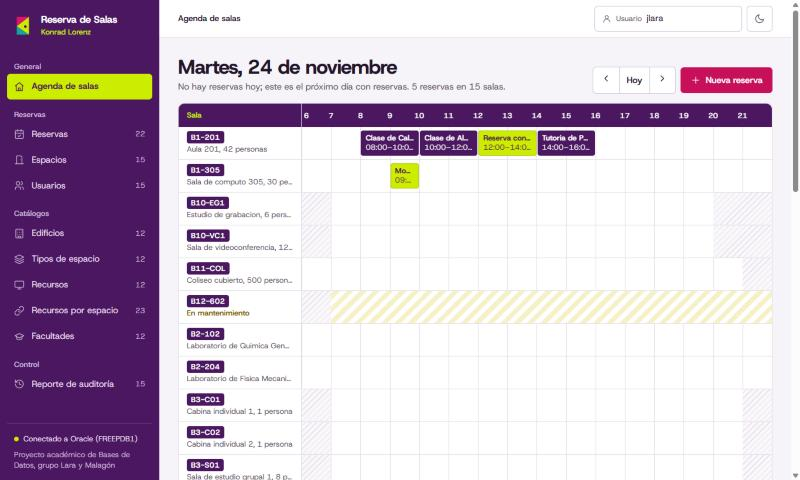
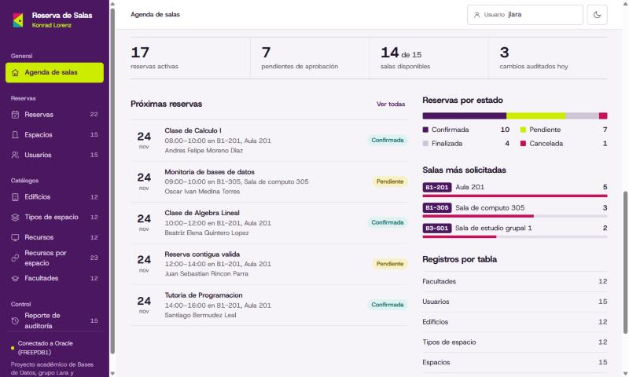
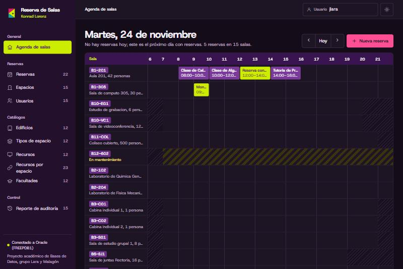
05_pruebas/pruebas.sql)La salida completa está en 05_pruebas/resultado_pruebas_sqlplus.txt.
| # | Caso | Esperado | Obtenido |
|---|---|---|---|
| P1 | INSERT válidos en FACULTAD, USUARIO y RESERVA | Se insertan y se auditan | 3 filas creadas; 3 INSERT en auditoría |
| P2 | UPDATE de reserva y espacio; repetir un UPDATE sin cambio | Antes, después y columnas; el UPDATE sin cambios no se audita | ESTADO,OBSERVACION y CAPACIDAD; el UPDATE sin cambios no generó registro |
| P3 | DELETE en ESPACIO_RECURSO (PK compuesta) y FACULTAD | Se guarda la fila borrada | ID_REGISTRO «14-1» y «13» con DATOS_ANTERIORES |
| 4.1 | Correo sin @ | Rechazo | ORA-02290 CK_USUARIO_EMAIL |
| 4.2 | Documento duplicado | Rechazo | ORA-00001 UQ_USUARIO_DOCUMENTO |
| 4.3 | Tipo de usuario «VISITANTE» | Rechazo | ORA-02290 CK_USUARIO_TIPO |
| 4.4 | Facultad inexistente | Rechazo | ORA-02291 FK_USUARIO_FACULTAD |
| 4.5 | Borrar edificio con espacios | Rechazo | ORA-02292 FK_ESPACIO_EDIFICIO |
| 4.6 | Fin antes que inicio | Rechazo | ORA-02290 CK_RESERVA_FECHAS |
| 4.7 | Edificio que abre a las 23 y cierra a las 5 | Rechazo | ORA-02290 CK_EDIFICIO_HORAS |
| 5.1 | Doble reserva del Aula 201 | Rechazo | ORA-20001 cruce con la reserva 6 |
| 5.2 | 5 personas en una cabina de 1 | Rechazo | ORA-20002 capacidad |
| 5.3 | 5 horas en una cabina (máximo 2) | Rechazo | ORA-20003 máximo de horas |
| 5.4 | Reserva a las 5:00 en la Biblioteca (abre a las 7) | Rechazo | ORA-20004 horario del edificio |
| 5.5 | Espacio en MANTENIMIENTO | Rechazo | ORA-20005 |
| 5.6 | Usuario INACTIVO | Rechazo | ORA-20005 |
| 5.7 | Reserva contigua (12:00 justo cuando termina la anterior) | Se permite | 1 fila creada |
| P6 | INSERT seguido de ROLLBACK | No queda auditoría | 0 registros |
| P7 | UPDATE y DELETE sobre AUDITORIA | Rechazo | ORA-20102 (historial protegido) |
| R | Restaurar los respaldos en un esquema vacío | Misma estructura y datos | Objetos y conteos idénticos |
-- 5.1 Doble reserva: cruza con la reserva 6 (Aula 201, 2026-11-24 08:00-10:00)
ORA-20001: Doble reserva: el espacio ya esta reservado en ese horario (cruce con la reserva 6).
ORA-06512: en "LM_RESERVASALAS.TRG_RESERVA_REGLAS", linea 15
ID_AUDITORIA FECHA_HORA TABLA OPERACION ID_REGISTRO QUIEN COLUMNAS_MODIFICADAS
------------ ----------------------- ---------------- --------- ----------- ---------------- --------------------
1 2026-11-19 22:50:53.078 FACULTAD INSERT 13 pruebas_sqlplus
2 2026-11-19 22:50:53.086 USUARIO INSERT 15 pruebas_sqlplus
3 2026-11-19 22:50:53.091 RESERVA INSERT 19 pruebas_sqlplus
4 2026-11-19 22:50:53.152 RESERVA UPDATE 19 pruebas_sqlplus ESTADO,OBSERVACION
5 2026-11-19 22:50:53.160 ESPACIO UPDATE 1 pruebas_sqlplus CAPACIDAD
6 2026-11-19 22:50:53.189 ESPACIO_RECURSO DELETE 14-1 pruebas_sqlplus
7 2026-11-19 22:50:53.195 FACULTAD DELETE 13 pruebas_sqlplus
16 2026-11-19 22:50:53.315 RESERVA INSERT 27 pruebas_sqlplus
Los saltos en ID_AUDITORIA (de 7 a 16) son normales. Las sentencias rechazadas alcanzaron a pedir números a la columna
IDENTITY antes de deshacerse, y Oracle no reutiliza esos números. Lo mismo explica que la reserva creada desde la app tenga el ID 40.
Se probaron las cuatro operaciones del CRUD desde la interfaz. Se creó la reserva 40 («Tutoría de Programación», 24 de noviembre, 14:00–16:00)
y luego la 62 desde el tablero, haciendo clic en el hueco de las 9:00 de la sala B1-305. Se consultaron con la búsqueda y el ordenamiento, y la 40 se
actualizó a confirmada con 25 asistentes. Para eliminar se usó un recurso temporal, y se comprobó que la llave foránea FK_ESPACIO_EDIFICIO
impide borrar el edificio B1. Las capturas son del diseño final.
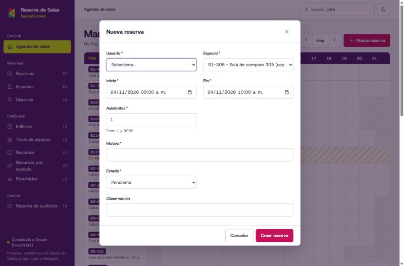
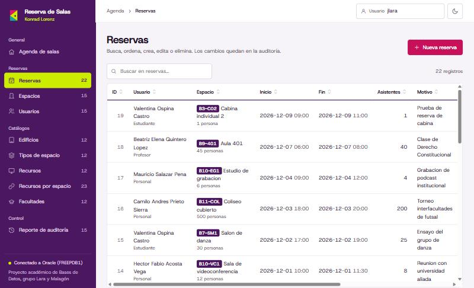
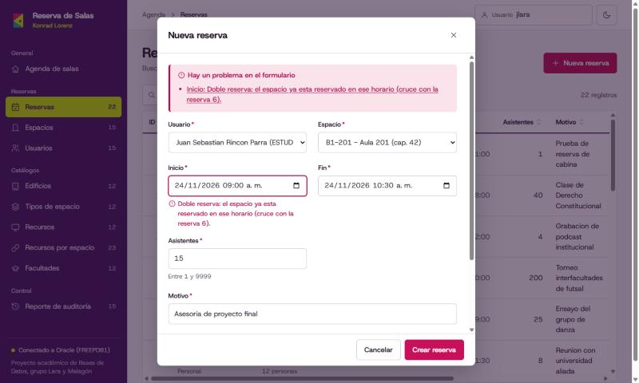
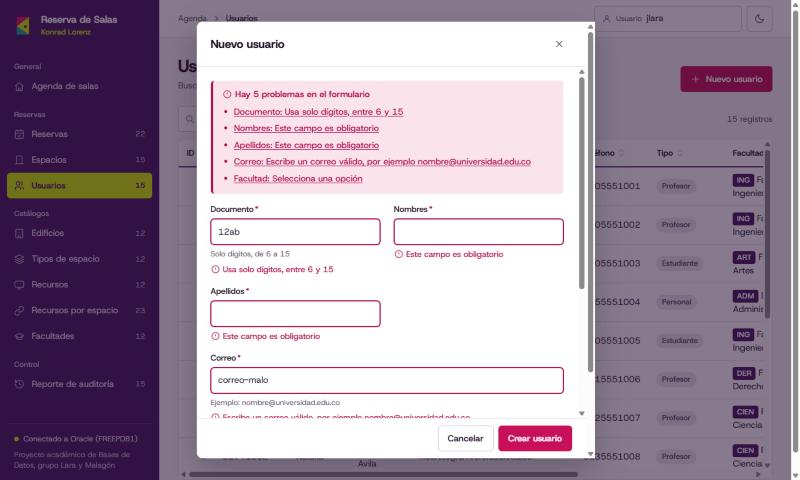
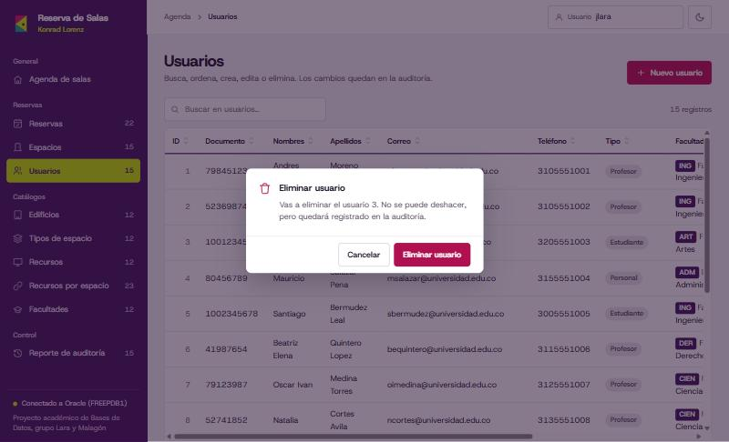
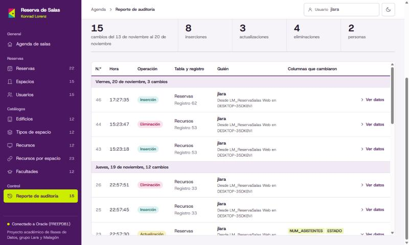
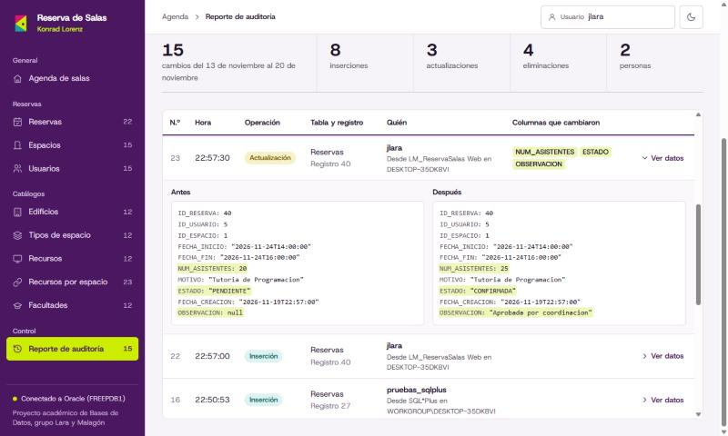
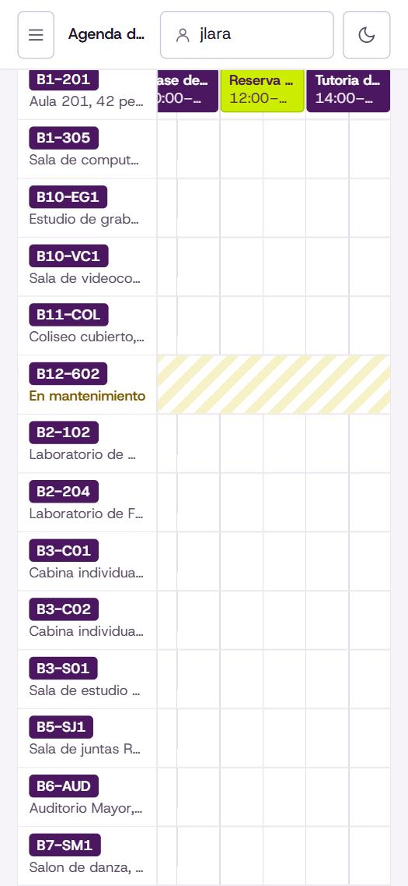
Además de las pruebas manuales, la aplicación tiene 38 pruebas automáticas de extremo a extremo escritas con Playwright
(04_app/tests/e2e). Controlan un navegador real (Microsoft Edge) como lo haría una persona: hacen clic, escriben y leen la pantalla.
Se ejecutan en dos perfiles, escritorio (1366 px) y celular (375 px), con un solo comando: npm run test:e2e.
| Grupo | Pruebas | Qué se comprueba |
|---|---|---|
| Navegación | 5 | La agenda muestra todas las salas y reservas del día; cada tabla abre con todos sus registros; enlaces directos, botón atrás, búsqueda y ordenamiento. |
| CRUD | 5 | Insertar, consultar, actualizar y eliminar en facultades, recursos, usuarios, recursos por espacio (llave compuesta) y reservas. |
| Tablero | 3 | Cambio de día; reservar haciendo clic en un hueco libre (sala y hora quedan puestas); editar desde un bloque; salas en mantenimiento. |
| Validaciones | 8 | Errores junto a cada campo y resumen enfocable; correo repetido, doble reserva, capacidad y máximo de horas mostrados en su campo; llave foránea; usuario obligatorio. |
| Auditoría | 4 | Las tres operaciones quedan registradas con el usuario de la app; detalle antes/después; filtro por operación; exportación a CSV. |
| Accesibilidad | 7 | Análisis automático con axe-core (WCAG 2.2 AA) sin problemas graves en cuatro pantallas; controles de 44 px; uso con teclado; tema oscuro. |
| Celular | 6 | Sin desplazamiento horizontal en cuatro pantallas; menú tipo cajón; columna de salas fija al desplazar el tablero. |
Resultado: 38 de 38 pruebas aprobadas, en dos ejecuciones completas seguidas. Los datos que crean las pruebas llevan la marca «E2E» y se borran al terminar; se verificó que no quedó ninguno.
La primera ejecución encontró errores reales que se corrigieron:
aria-hidden, así que eran invisibles para los
lectores de pantalla aunque se podía llegar a ellos con el teclado. Además, su nombre accesible no incluía el texto visible.PKG_AUDITORIA.GENERAR_TODOS cubre todas las tablas, incluidas las que se agreguen después, y el formato JSON permite que una
única tabla guarde los datos anteriores y nuevos de cualquier tabla.CLIENT_IDENTIFIER, la auditoría distingue a cada persona sin crear un usuario
de Oracle por cada una.NOT (a = b) no detecta el paso de NULL a un valor.
Fue una buena lección sobre la lógica de tres valores de SQL.| Punto | Entregable | Ruta en la carpeta del proyecto |
|---|---|---|
| 1 | Diagrama relacional (draw.io e imagen) | 01_diseno/diagrama_relacional.drawio, .png |
| 1 | Diccionario de datos (Excel y PDF) | 01_diseno/diccionario_datos.xlsx, .pdf |
| 2 | Creación de la base de datos, restricciones y datos | 02_scripts/00_…, 01_…, 02_… |
| 2 | Script de backup de solo estructura y su resultado | 02_scripts/05_backup_estructura.sql → 03_backups/LM_RESERVASALAS_estructura_*.sql |
| 2 | Script de backup de datos y su resultado | 02_scripts/06_backup_datos.sql → 03_backups/LM_RESERVASALAS_datos_*.sql |
| 3 | Solución de auditoría (tabla, paquete y triggers) | 02_scripts/03_auditoria.sql |
| 3 | Vistas y bloque anónimo de consulta | 02_scripts/04_consulta_auditoria.sql |
| 4 | Aplicación web CRUD y reporte de auditoría | 04_app/ |
| 5 | Datos de prueba, resultados y capturas | 05_pruebas/ |
| 5 | Pruebas automáticas con Playwright (38 pruebas) | 04_app/tests/e2e/ |
Requisitos: Oracle Database Free con su servicio iniciado, Node.js y, para las pruebas automáticas, Microsoft Edge. Antes de
empezar, en 04_app se copia .env.example como .env y se escribe la clave del esquema. Las claves reales no
se entregan en el repositorio.
REM 1. Crear la base de datos completa (esquema, tablas, datos, auditoría y vistas) 02_scripts\instalar_bd.bat REM 2. Generar los respaldos de estructura y de datos 02_scripts\backup.bat REM 3. Aplicación web -> http://localhost:3000 cd 04_app npm install npm start REM 4. Pruebas automáticas (con Oracle encendido) npm run test:e2e
Enlace de los adjuntos: todos los entregables están en el repositorio público https://github.com/Hatchedbot/ReservaSalasBD2, en la rama main, con la misma estructura de carpetas de la tabla anterior.